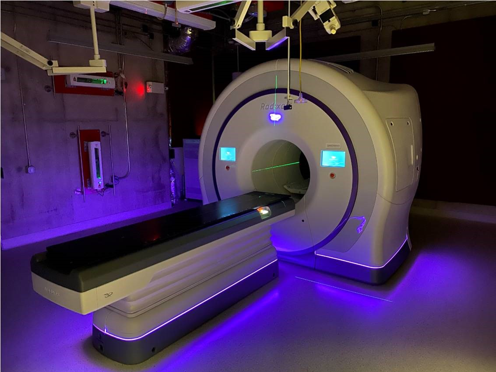

Our real-time AI-driven system uses high-resolution imaging and fluorescence to detect cancerous tissue during surgery. This allows surgeons to identify and remove microscopic residuals without needing a second operation.
It combines computer vision, surgical-grade cameras, and machine learning to map tissue zones, analyze risk regions, and generate real-time feedback for intraoperative decision-making. It's currently undergoing testing at MIMS OT.
Request Demo